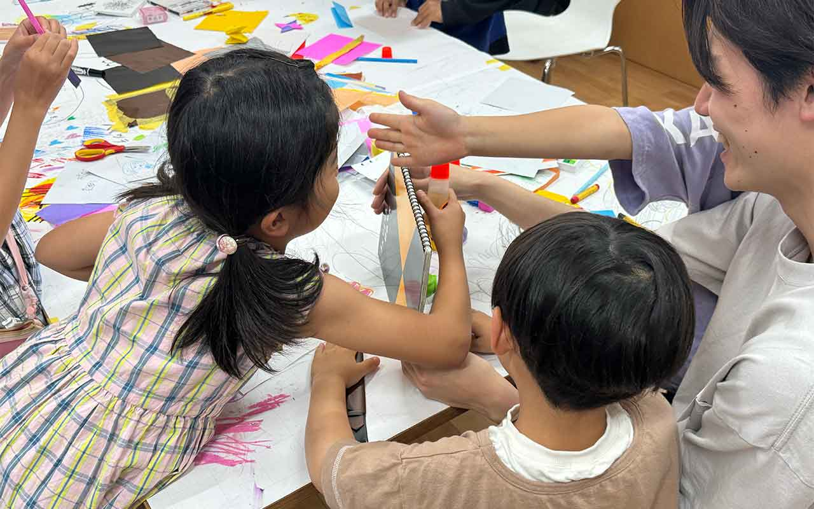

サウンド記憶ゲーム
ゲームのきほん
- 何をする？：異なる種類の文房具が連続して落ちてくる音を聞き、落ちた順番通りに何が落ちたかを記憶するゲーム
- 対象年齢：全年齢対象
- プレイ人数：２人推奨、複数人も可
- プレイ時間：３〜5分
準備するもの
- 鉛筆、マーカーペン、クレヨンなど3〜5種類の文房具をそれぞれ2つ以上
遊び方

- 文房具を落とす側と聞く側に分かれて、聞く側は目を瞑る。
- 落とす側は3〜5個の文房具を選び、順番に落とす。(同じものは2個まで可とする)
- 聞く側は何がどの順番で落ちたかを聞いて記憶する。
- 全員目を開いて、聞く側の人が手元の文房具を落ちた順番に並べる。順番が合っていればチャレンジ成功！
- 役割を変え、1〜4を繰り返す。
楽しく遊ぶためのヒント
- 似た様な音がするものを交互に落とすと難易度が上がる。
- 順番に落とす間隔を狭めると相手の記憶を混乱させることができる。
- 事前にそれぞれどんな音がするのか確認しておくと聴き分けやすくなる。